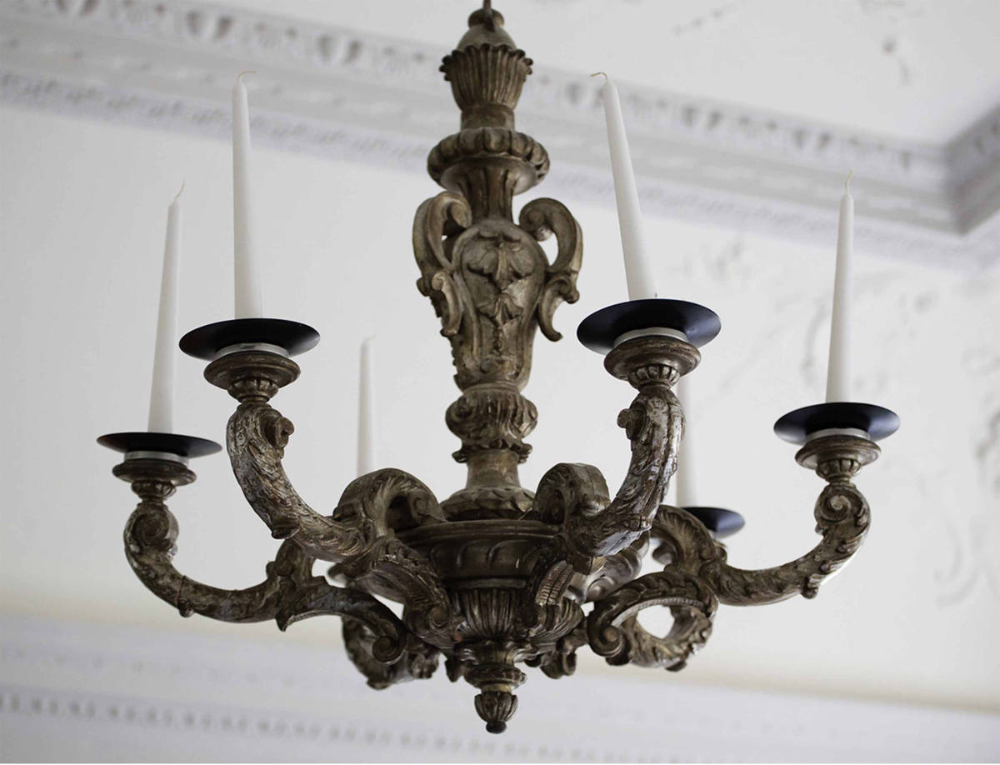

anfora
Welcome to Anfora Wine Bar
A new exciting space, which aims to bring together people for their love of wine and food. We welcome you back to the home of wine. At Anfora we offer a terrific selection of diverse & interesting wines from small, independent producers. We also offer a dining experience of small or big plates of rich, gutsy, imaginative food, without losing a sense of individual identity. You can find us at the Vaults in Leith, a stone throw away from Leith Walk.
Private dining
Certainly the oldest building in Scotland, and possibly in Britain, still continuously used for commercial purposes since 14th century. By this time, the wine trade with Bordeaux was well established. The monks of Holyrood not only imported their own wines, but had a right to dues on the importation of wine coming into the Port of Leith. The room was known as the 'Sales Room': wines which had been landed at the Port of Leith were sampled here by members of the Guild and purchased if approved. The price itself was fixed by the Edinburgh Town Council. Once purchased, the casks were carted up to Edinburgh and sold on draught, the citizens filling their own bottles and jugs. Now you have an opportunity to book the table in this authentic room for the dinner or the whole room for the private party.
CHEF

Attila's love for food began when he was a ten year old watching his grand- mother in awe as she baked in their small kitchen in Budapest. Since arriving in Britain, Attila has worked his way up to sous chef in the award winning Michelin star Chapters Restaurants. His love and passion for food is not only exemplified in the menu, but also infectious.
News and events

Contact us
Edinburgh
EH6 6BZ
Telephone: 0131 553 6914
Email: info@anforawinebar.co.uk
Opening times:
Mon: 12:00 - 23:00
Tue: Closed
Wed-Thu: 12:00 - 23:00
Fri-Sat: 12:00 - 00:00
Sun: 12:00 - 23:00